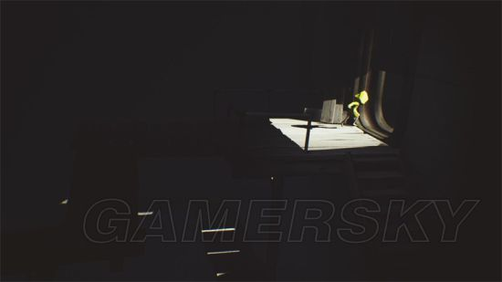
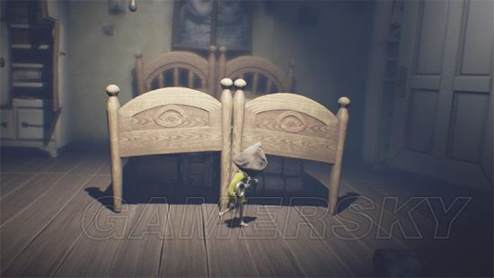
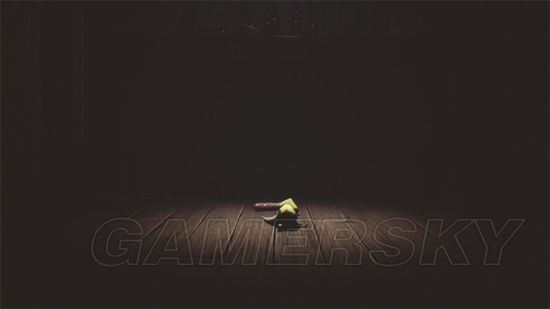
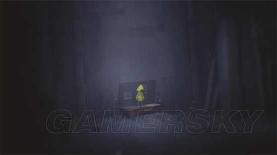
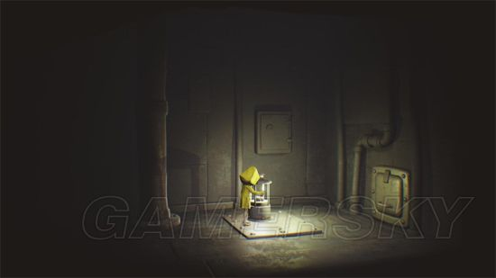
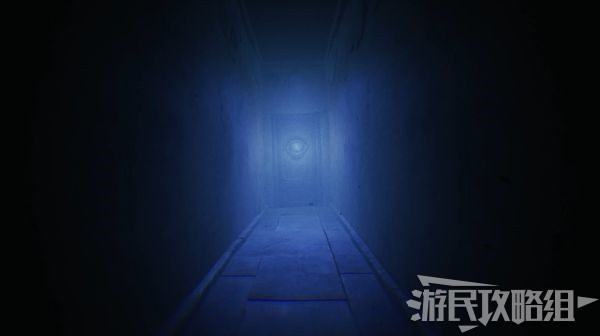
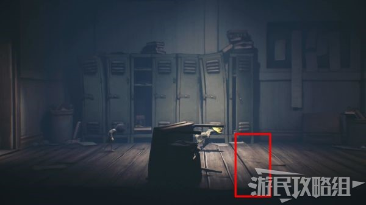
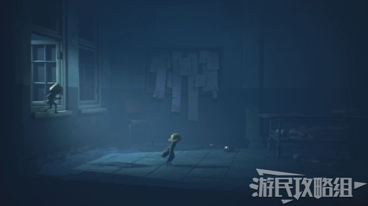
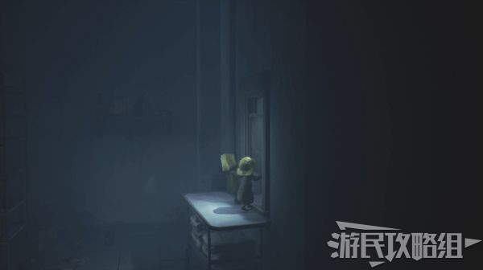
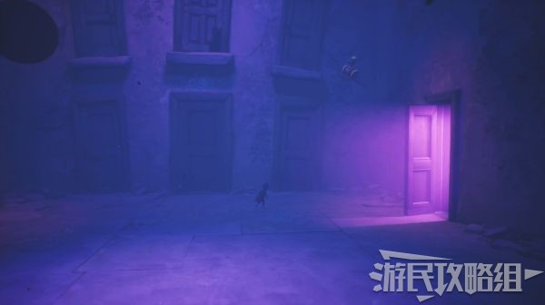

《小小梦魇》系列全攻略——两部作品完整流程、隐藏要素、角色解析和剧情深度解读。含游戏实景截图。
开始浏览攻略 →小小梦魇（Little Nightmares）是由波兰工作室 Tarsier Studios 开发、Bandai Namco 发行的惊悚解谜冒险游戏系列。
原作原名《饥饿》（Hunger），后更名为《小小梦魇》。游戏采用横向卷轴玩法，结合3D精致画面，将玩家带入一个古怪的童年噩梦世界。
| 按键 | 功能 | 说明 |
|---|---|---|
| WASD / 方向键 | 移动 / 视角 | 上下左右移动 |
| 空格键 | 跳跃 / 丢弃 | 跳跃、攀爬、丢弃手中物品 |
| Shift | 跑步 | 速度快但会产生噪音 |
| Ctrl | 蹲下 / 滑行 | 在低矮空间通行，移动更安静 |
| F | 点燃打火机 | 在黑暗区域提供光源，部分区域用于保存进度 |
| 鼠标左键 | 抓住 / 互动 | 抓住把手、开关、攀爬物等 |
| 鼠标右键 | 投掷 | 第二部中投掷帽子或物品 |
贪颚号是一艘巨大的远洋渔船，漂浮在迷雾笼罩的海面上。游戏共有5个主要章节，六（Six）需要从底层一路向上逃离。
| 章节 | 名称 | 主要内容 |
|---|---|---|
| 第一章 | 监狱（Prison） | 眼睛看守、水蛭、通风管道 |
| 第二章 | 货仓（Cargo） | 长臂工人、传送带、锅炉房 |
| 第三章 | 厨房（Kitchen） | 双子厨师、蒸汽谜题 |
| 第四章 | 餐厅（Dining Room） | 食客、宴会、宾客区 |
| 第五章 | 客房（Guest Quarters） | The Lady、结局 |





第二部中，玩家控制小男孩Mono（摩诺），与六一起冒险。核心玩法是双人合作。
| 章节 | 名称 | 主要区域 | Boss |
|---|---|---|---|
| 第一章 | 森林（The Woods） | 森林、猎人小屋 | 猎人 |
| 第二章 | 学校（The School） | 学校走廊、教室 | 女教师 |
| 第三章 | 医院（The Hospital） | 医院、实验室 | 医生 |
| 第四章 | 信号塔（The Signal Tower） | 信号塔、居民区 | Thin Man（瘦人） |
| 第五章 | 幻境（The Pale City） | 电视城、六的房间 | 怪物六 |





DLC 讲述了无名小男孩在贪颚号的经历，时间线与第一部并行。
| 角色 | 身份 | 特征 | 备注 |
|---|---|---|---|
| 六（Six） | 第一部主角 / LN2主角 | 黄色雨衣、透明头盔 | 饥饿而孤独的小女孩，真实身份成谜 |
| Mono（摩诺） | LN2主角 | 棕色高帽、独眼 | 能把画变现实，是六的唯一希望 |
| The Lady（夫人） | 第一部最终Boss | 穿着优雅的神秘女性 | 贪颚号的主宰，六的黑暗面 |
| Thin Man（瘦人） | LN2最终Boss | 西装革履的瘦高男子 | 控制信号塔，用电视信号操控世人 |
| 敌人 | 出现章节 | 特征 | 弱点 |
|---|---|---|---|
| 眼睛（The Eye） | 第一部·监狱 | 巨大的独眼生物 | 视力有限，可利用阴影躲避 |
| 水蛭（Leech） | 第一部·监狱 | 爬行的巨型水蛭 | 需要快速奔跑通过 |
| 长臂工人 | 第一部·货仓 | 手臂极长的盲眼工人 | 视力差，靠声音定位 |
| 双子厨师 | 第一部·厨房 | 两个肥胖的厨师 | 行动笨拙，可被蒸汽烫伤 |
| 食客 | 第一部·餐厅 | 贪婪的进食者 | 专注进食时不会注意你 |
| 猎人 | 第二部·森林 | 戴纸帽的疯狂猎人 | 可利用陷阱击败 |
| 女教师 | 第二部·学校 | 长脖子的女教师 | 可被帽子吸引注意 |
| 医生 | 第二部·医院 | 四臂的蜘蛛侠医生 | 可利用环境障碍 |
| 电视人 | 第二部·信号塔 | 头部是老式电视机 | 会被帽子颜色吸引 |
《小小梦魇》的世界是一个扭曲的、超现实的梦境空间。这个世界遵循着"弱肉强食"的逻辑——大的吃小的，强者支配弱者。
六（Six）身上存在着两种对立的人格：
随着六在贪颚号中不断上升，她对精神的影响力越来越大。最终，童真的小六逐渐从这个世界上消逝，黑暗的小六成为了 The Lady。
《小小梦魇》系列的核心主题是成长的轮回：
成长不可避免，但童真也无法磨灭——那个无法被打败的孩子永远都会存在于每一个被世界伤害过又变成怪物的大人的梦中。
官方发布的6篇漫画揭示了更多角色背景：
| 漫画 | 内容 | 对应角色 |
|---|---|---|
| 漫画1 | 六在森林里躲避猎人，被Mono吸引后被猎人抓走 | 六 → The Lady |
| 漫画2 | 盲孩子在森林里睡觉，被电视声音吸引后被Thin Man抓走 | 盲孩子 → 长臂工人 |
| 漫画3 | 女学童被学校囚禁，挖隧道逃跑被医生抓走 | 女学童 → 女教师 |
| 漫画4 | 胖孩子遭欺凌，用棒棒糖敲碎别人脑袋后被女老师抓走 | 胖孩子 → 厨师 |
| 漫画5 | 幽灵小孩救受伤老鼠，被看电视的居民抓走 | 幽灵小孩 → 医生 |
| 漫画6 | Mono在学校被俘虏，逃跑被Thin Man抓，躲进电视机 | Mono → Thin Man |
| 成就名 | 达成条件 | 难度 |
|---|---|---|
| 逃脱者 | 完成游戏 | 简单 |
| Highly Sprung | 在特定区域跳跃通过 | 简单 |
| Six's Song | 发现并聆听六的歌 | 中等 |
| Kitchen Hand | 在厨房区域完成特定操作 | 中等 |
| 全收集 | 收集所有灯笼、蜡烛和小矮人 | 困难 |
| 成就名 | 达成条件 | 难度 |
|---|---|---|
| 逃窜的猎物 | 在森林章节完成特定逃脱 | 简单 |
| 这里面放了什么！？ | 发现隐藏内容 | 中等 |
| 学校的孩子 | 在学校章节完成特定目标 | 中等 |
| 全帽子收集 | 收集所有帽子 | 困难 |
| 全失灵碎片 | 收集所有Glitching Remains | 困难 |
| 真结局 | 达成"共同的未来"结局 | 需要全收集 |
第二部共有 10+ 顶帽子，收集后改变 Mono 的外观：
| 帽子 | 章节 | 获取方法 |
|---|---|---|
| 诺姆帽（Nom Hat） | 第一章·森林 | 遇见诺姆后，拉电闸开灯，回到入口处拉开抽屉爬上架子，在电闸上方平台 |
| 毛毡帽（Felt Hat） | 第一章·森林 | 猎人小屋内，走廊最左下角房间的地毯上 |
| 圆帽子（Round Hat） | 第二章·学校 | 学校入口旁的垃圾桶上 |
| 罐头帽（Can Hat） | 第二章·学校 | 女教师的书架上 |
| 书架帽（Bookshelf Hat） | 第三章·医院 | CT扫描室旁边房间的书柜顶部 |
| 太平间帽（Morgue Hat） | 第三章·医院 | 太平间内，打开特定柜子 |
| 警官帽（Police Hat） | 第四章·淡出 | 信号塔附近，左边墙壁上的洞口内 |
| 商店帽（Shop Hat） | 第四章·淡出 | 商店内，将推车移至货架旁，爬上货架获得 |
共 18 个失灵碎片，代表 Mono 被抓走时留下的灵魂碎片：
第一部包含 13个小矮人（Nomes）、灯笼、蜡烛和陶瓷雕像：
| 彩蛋 | 位置 | 说明 |
|---|---|---|
| 极小梦魇 | 移动端 | 竖屏手游，时间线比前传更早，主角是穿黄雨衣的小女孩 |
| 官方漫画 | Titan Books | 6篇漫画揭示各角色如何变成怪物的过程 |
| 血红色眼睛 | 全系列 | "心灵之眼"变为血色，象征贪婪和暴躁的梦魇 |
| 电视信号 | 第二部 | 电视人头部是老式电视机，暗示媒体对人的控制 |
| 诺姆帽DLC | 第二部 | 诺姆帽不影响全成就，是额外收集品 |
| 游戏 | 成就名 | 条件 | 类型 |
|---|---|---|---|
| 第一部 | Light Up Your Life | 点亮所有灯笼 | 中等 |
| 第一部 | Hard to the Core | 找到所有小矮人 | 困难 |
| 第一部 | 陶瓷大师 | 收集所有陶瓷雕像 | 困难 |
| 第二部 | Wild Kids | 收集森林章节所有失灵碎片 | 中等 |
| 第二部 | School Kids | 收集学校章节所有失灵碎片 | 中等 |
| 第二部 | Sick Kids | 收集医院章节所有失灵碎片 | 中等 |
| 第二部 | No More Remains | 收集全部18个失灵碎片 | 困难 |
| 第二部 | Hat Collector | 收集所有帽子 | 困难 |
| 第二部 | 共同的未来 | 达成隐藏结局 | 全收集 |